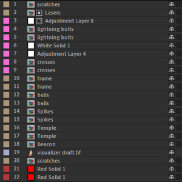
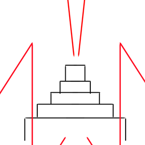
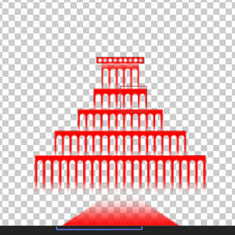
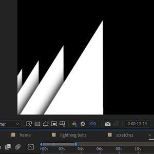
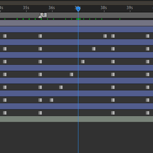
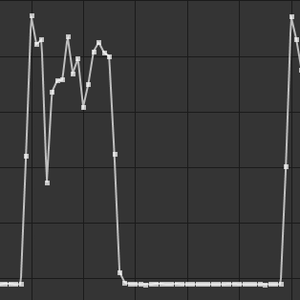
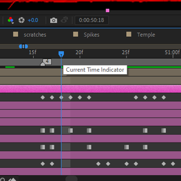
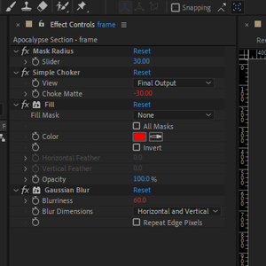
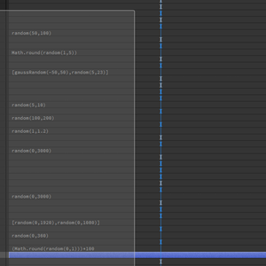

Case Study
This is my favourite visualizer I have made. It doesn't sync perfectly to the music, the animation is stuttery and janky, and it is dark and grimy. I really wanted to make something that felt like it fit the song perfectly. When I found this song, it was paired with a picture of a temple with a beam of light coming out of it, and I needed to make my own interpretation of this visual for this song. While this isn't as technically complex as some of the other projects I've worked onm I think it does a really good job of showing the detail in my work and the process I go through to create things like this.
Apocalypse

Project Organization
I keep my projects incredibly organized. This is partially just good practice, but it's also important to keep things organized because many of them take a long time to make and have to be readable to other people. These projects remain organized through every composition.
Primary Sketch
I usually start my projects with a very rough sketch. Having something simple to use as the basis for visuals and animation. Simply having this basis helps to speed up a project and reduce burnout.
Seperate Components
I seperate every major component of my animation into their own precomps. It not only makes it easy to understand what I'm working on, but it allows for more complex layering in the 2D style I work with.
Simplifying Animation
I like to keep my animation as simple as possible. If I can take out keyframes and still have the same look, I will. If I can replace something with an expression, I will. Reducing the complexity makes projects feel less like spaghetti. They become easier to understand and better for it.
Keyframing
While I like to reduce my use of too many keyframes, I do use a lot of keyframes in projects when things need to be incredibly exact.
Automation
When I'm working with audio, I like to mess around with the audio in different ways in order to easily create automated keyframes. By filtering out a specific part of the audio i can automate keyframes to just that section.
Precomps
Because of how I use precomps, I often apply animation to them again after they are already composed.
Custom Effects
After I do an effect over and over again, I will eventually make a custom effect to easily apply it whenever I need to without having to build it from the ground up every time I need it.
Details
I have high standards for my animations being detailed and visually stunning. In this project, I wanted grain and scratches to cover the whole thing like old school film. I couldn't find any that I liked, so I just made my own using After Effects.
Expressions
My projects are filled with expressions, especially with things that need to be random. Running animation through expressions instead of keyframes lets it be more complicated while still being able to work quickly.